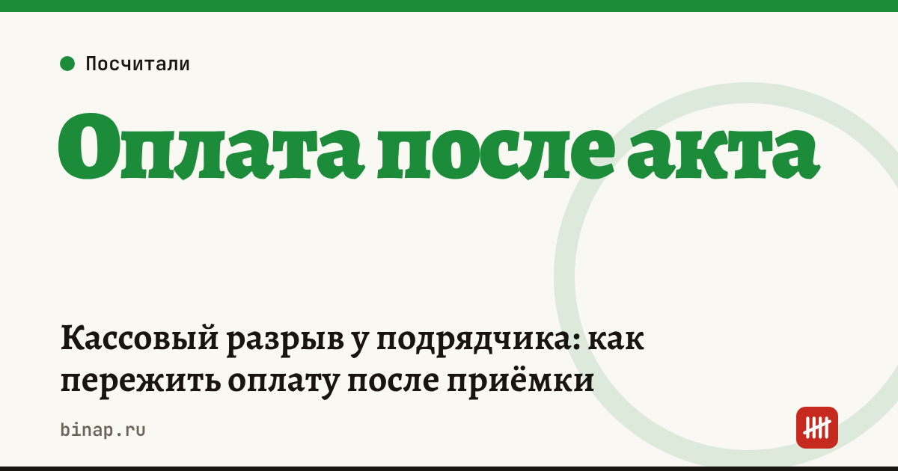

Кассовый разрыв у подрядчика: как пережить оплату после приёмки

У подрядчика деньги уходят каждый день — зарплата бригаде, материалы, аренда техники, — а приходят после того, как заказчик подпишет акт и пройдёт срок оплаты. Если объект длится три месяца и оплата после приёмки, разрыв может достигать почти всей себестоимости объекта. Ниже — как его посчитать заранее и какие инструменты помогают.
Коротко
- Разрыв считают по объекту: расходы по неделям против оплат по договору.
- Главные рычаги — аванс, оплата по этапам и короткий срок оплаты после акта.
- Если разрыв не закрыть договором, помогают банковская гарантия на возврат аванса, факторинг и кредитная линия.
- По данным «КонсультантПлюс», с 1 января 2027 года в закупках госкомпаний по 223-ФЗ субподрядчикам из МСП должны платить не позже 7 рабочих дней после приёмки.
- Сначала считайте, потом подписывайте: самый дешёвый способ закрыть разрыв — условия договора.
Сроки, изменения и разборы для ИП и самозанятых — каждое утро в Telegram и MAX. Подпишитесь, чтобы не пропустить.
Пример: объект на три месяца
Расчёт редакции на условных цифрах. Ремонт помещения за 3 000 000 ₽, себестоимость — 2 400 000 ₽, равномерно по 200 000 ₽ в неделю в течение 12 недель. Оплата — одним платежом через 30 дней после подписания акта.
| Неделя | Потрачено нарастающим итогом | Получено | Разрыв |
|---|---|---|---|
| 4 | 800 000 ₽ | 0 ₽ | 800 000 ₽ |
| 8 | 1 600 000 ₽ | 0 ₽ | 1 600 000 ₽ |
| 12 (акт подписан) | 2 400 000 ₽ | 0 ₽ | 2 400 000 ₽ |
| 16 (оплата) | 2 400 000 ₽ | 3 000 000 ₽ | — |
Максимальный разрыв — 2 400 000 ₽, и держится он почти месяц после окончания работ.
Тот же объект с авансом 30% и оплатой по двум этапам (акты после 6-й и 12-й недели, оплата через 7 дней после акта):
| Неделя | Потрачено | Получено | Разрыв |
|---|---|---|---|
| 0 | 0 ₽ | 900 000 ₽ | — |
| 6 | 1 200 000 ₽ | 900 000 ₽ | 300 000 ₽ |
| 7 (до оплаты 1-го этапа) | 1 400 000 ₽ | 900 000 ₽ | 500 000 ₽ |
| 7 (оплата 1-го этапа: 1 050 000 ₽) | 1 400 000 ₽ | 1 950 000 ₽ | — |
| 12 | 2 400 000 ₽ | 1 950 000 ₽ | 450 000 ₽ |
Максимальный разрыв упал с 2,4 млн до 500 000 ₽ — в 4,8 раза (расчёт редакции). Это и есть главный аргумент в переговорах. Посчитать свой объект можно в калькуляторе кассового разрыва.
Чем закрыть разрыв
| Инструмент | Когда подходит | Что учесть |
|---|---|---|
| Аванс | заказчик готов платить вперёд | часто просят банковскую гарантию на возврат аванса |
| Оплата по этапам | работы делятся на части с отдельной приёмкой | пропишите этапы и сроки приёмки в договоре |
| Банковская гарантия | госзаказ или крупный заказчик | комиссия банка, срок выдачи — как получить гарантию |
| Факторинг | работа принята, оплата ждёт по договору | деньги за подписанный акт сразу — как работает факторинг |
| Кредитная линия | разрывы повторяются на каждом объекте | процент только за выбранные деньги |
Что прописать в договоре
- Аванс на закупку материалов — хотя бы под первый этап.
- Этапы работ с отдельными актами и оплатой.
- Срок приёмки: сколько дней у заказчика на подписание акта или мотивированный отказ.
- Срок оплаты после акта — чем короче, тем лучше; для субподряда госкомпаний с 2027 года ориентир — 7 рабочих дней.
- Неустойку за просрочку оплаты, равную вашей неустойке за просрочку работ.
Перед договором проверьте и самого заказчика, и своих субподрядчиков: Субподрядчик-однодневка: как проверить. Все материалы — в разделе Подрядчикам.
Частые вопросы
Как посчитать максимальный кассовый разрыв? Сложите расходы по неделям нарастающим итогом и вычтите полученные оплаты. Самое большое значение разницы — ваш максимальный разрыв.
Что делать, если заказчик не подписывает акт? Направьте акт официально — письмом или через ЭДО — и ссылайтесь на срок приёмки из договора. Если срок прошёл без мотивированного отказа, это аргумент для взыскания оплаты.
Что дешевле — факторинг или кредит? Сравните по годовой ставке: комиссия факторинга ÷ полученные деньги × 365 ÷ дни отсрочки. Пример расчёта — в статье о факторинге.